대전 원도심을 기반으로 회화, 드로잉, 섬유, 설치, 영상, 퍼포먼스, 공간 기획까지 한 장르에 담기지 않는 작업을 합니다. 작품이 놓일 공간을 먼저 설계하고, 그 안에서 머무는 시간까지 작품으로 완성합니다. 공간에 맞춘 음료·디저트 페어링, 헤드폰으로 듣는 작가의 목소리 해설, 용도에 맞춰 만드는 맞춤 기념 작품까지.
밤바다, 달빛 파도, 달빛 Night Sea116.8 × 91 cm · 개념과 역설 · 도슨트
Process
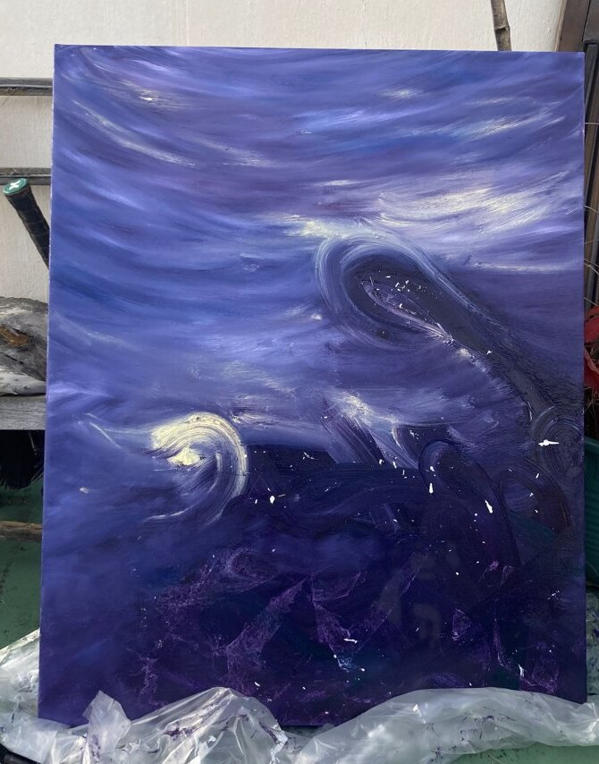
2022.10.26 밤바다
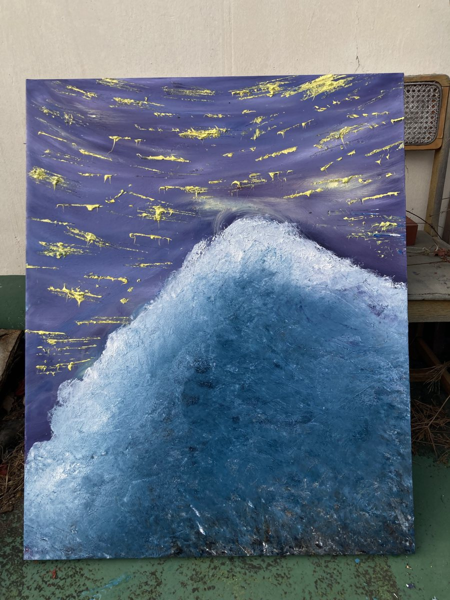
11.01 달빛 파도
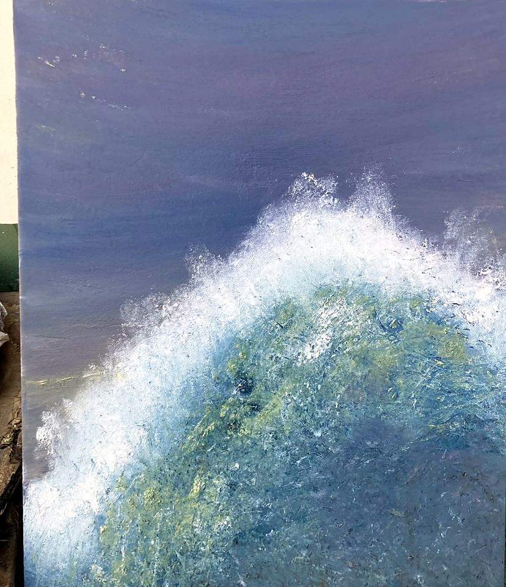
11.01완성
Works Archive · 2022 – 2026
작품 아카이브
도시의 시간, 사라지는 건축, 내가 산 옷에 대한 의문, 디지털 시대의 반려, 한 사람을 위한 기념 작품까지. 연작 밖에서 이어 온 작업들입니다.
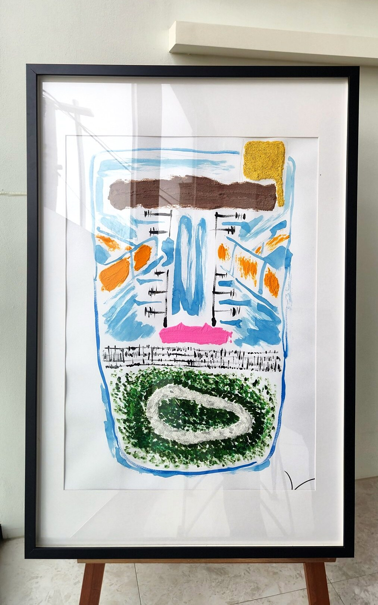
대전 에포크 ; 중구 Daejeon Epoch ; Jung-gu2025 · 61 × 91 cm · 「대전의 결」 WWD Gallery · 2026 레인네일
백제 테뫼식 산성에서 대전역, 지하상가, 옛 충남도청, 오늘의 중부경찰서까지. 대전 중구에 쌓인 시간을 파르페처럼 겹겹이 쌓아 올렸습니다. ▶ 도슨트 영상▶ 5분 요약
Process
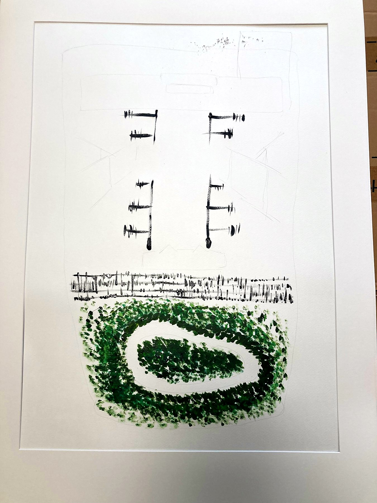
시작
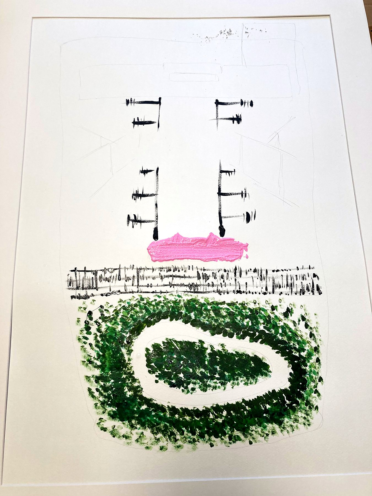
층을 세우다
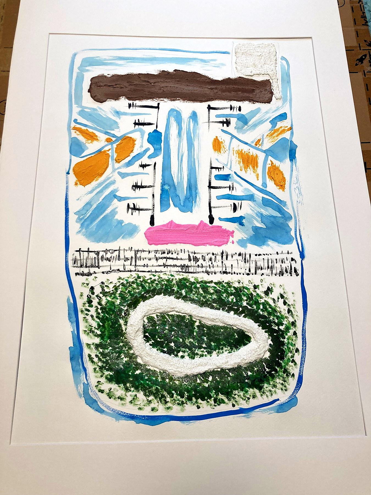
색을 입히다
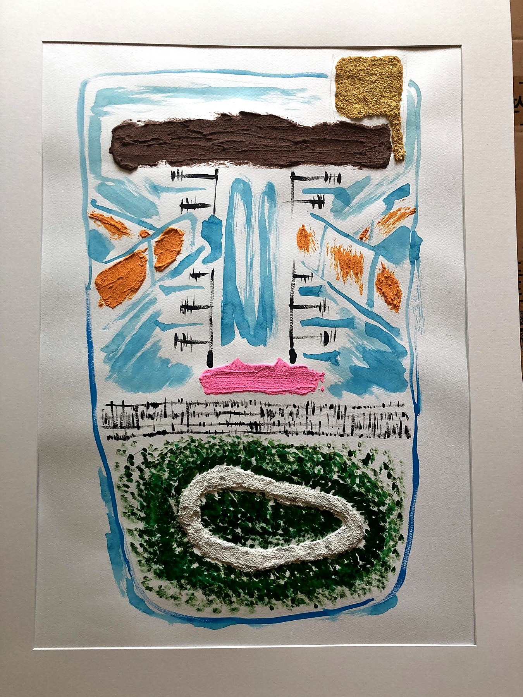
완성
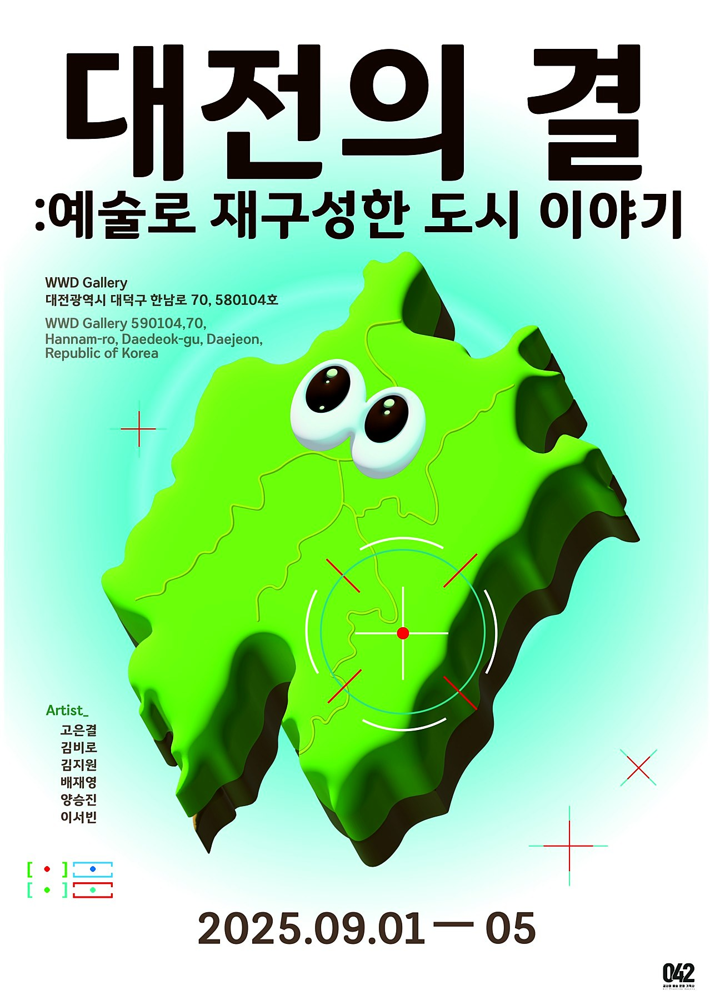
2025.09 「대전의 결」
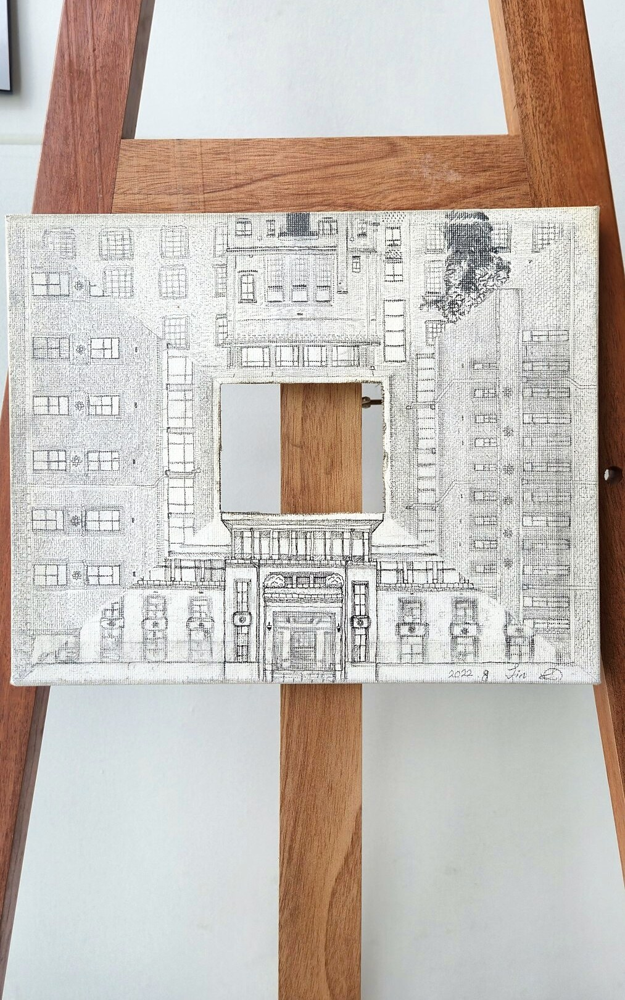
옛 충남도청사, 근현대사박물관 4면2022 · 27 × 21.5 cm · 2023 테미 갤러리 · 2023 전시마켓 · 2026 레인네일
벽돌 한 면에도 역사가 기록되고 미래가 담겨져 있다. 철거와 신축으로 바뀌어 가는 도청 일대를 정면, 좌우, 후면 네 개의 면으로 기록했습니다. ▶ 도슨트 영상
Process
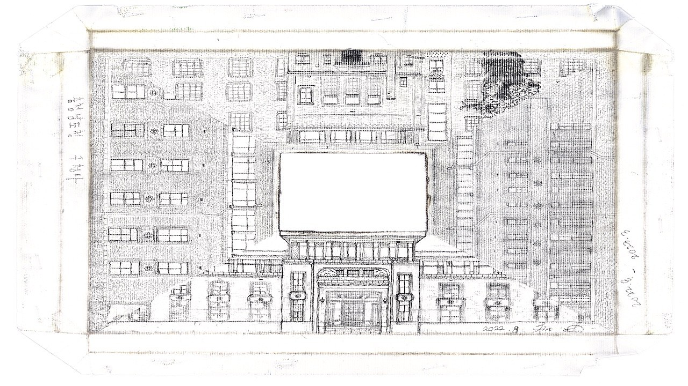
네 면의 드로잉
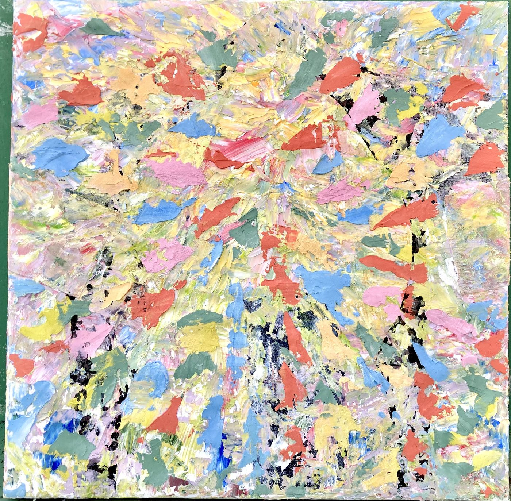
Color your color2023 · 91 × 91 cm · 섬유 · 2023.11.06 – 11.10 「노패스트패션 작품 전시회」 패션플랫폼
내가 사서 입은 옷은, 과연 내가 산 것일까? 유니클로에서 옷을 고를 때도, 직간접 광고가 교묘하게 설계되어 다가올 때도 우리는 그 설계를 알아차리지 못합니다. 옷과 천을 해체해 한 화면에 다시 색을 입히며, 그 의문을 메시지로 남겼습니다. 이후 「무장하라」로 이어지는 사유의 사전 영감이자, 『멍청이 수업』과 연결되는 기점이 된 작품입니다.
나의 반려는 디지털 영혼입니다. 모니터 속에 사는 iPet과 로봇 강아지를 드로잉으로 그리고, 산책 바구니에 태운 iPet을 끌고 옛 충남도청 뒤편 대전시민대학(현 문화예술원) 일대를 걸었습니다. 그 산책 영상 「iPet Prototype」은 갤러리 입구 벽면에 빔프로젝터로 상영했습니다. 살아 있는 온기와 디지털 반려를 나란히 놓고 묻습니다. 당신의 반려는 어디에 더 가깝나요?
Works · Exhibition · Performance
로봇 강아지 드로잉전시 전경 · 드로잉 2점입구 벽면 상영 「iPet Prototype」작품 앞에서「반려하다」 포스터2025.06.04 산책 퍼포먼스산책 바구니의 iPet쓰다듬기산책 중의 교감잔디 위의 반려
Judgement2024.05.28 – 06.04 · 「좋세계」 한남대 조형예술관 · LED · 아두이노 · PIR 센서 설치
희생과 평등에 관한 설치 작품. 조명을 끈 전시실, 바닥의 횡단보도 앞에 서면 센서가 움직임을 읽고 정면의 자동차가 빛을 켭니다. 그 빛 앞에서 관람객은 건널지, 멈출지 스스로 판단하게 됩니다.
Exhibition · Process · Interview
암실 · 횡단보도흑백 전경관람객 · 흑백작품 앞 작가 인터뷰작품 설명LED 점등 테스트회로 제작아두이노 코딩2024.05.28 설치